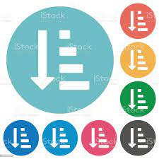

Ordenadas

São aquelas em que a ordem faz a diferença.
Como trocar o pneu do carro.
- Colocar o macaco na posição correta.
- Suspender um pouco o macaco.
- Afrouxar as porcas da roda.
- Suspender o carro.
- Retirar as porcas.
- Substituir a roda do carro.
Listas não Ordenadas

Como o próprio nome define... A sequência não define.
- papel
- caneta
- caderno
- lápis
Listas por Odenada

listas do mercado
- Mês passado
- Feijão
- Arroz
- Cuscuz
- Mês atual
- Macarrão
- Farinha
- açúcar
- Leite
Lista Por Definição